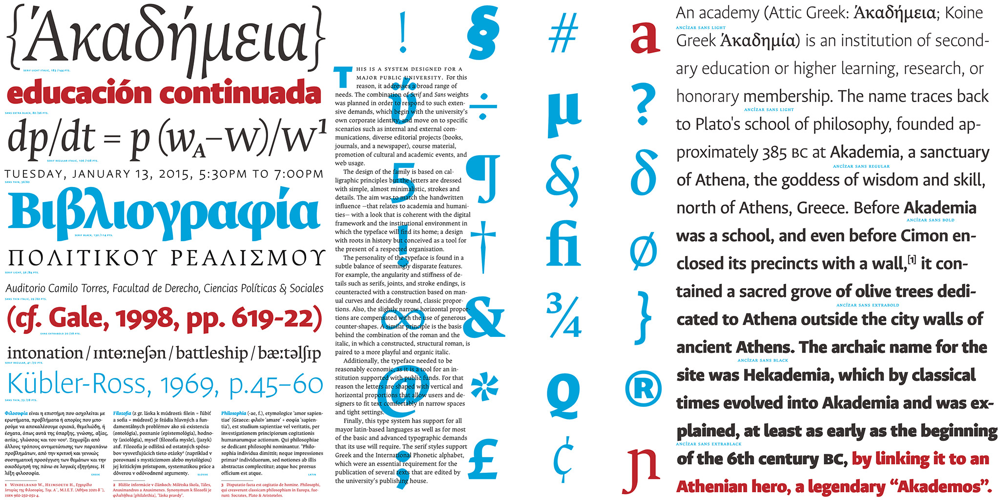

UNAL Ancízar is a highly versatile and legible typeface family, initially designed in 2014 to strengthen the institutional image of Universidad Nacional de Colombia, the country's largest public university. This typeface was initially designed by Professor César Puertas (Faculty of Arts, Bogotá Campus), Viviana Monsalve, and Julián Moncada, within the framework of a project led by Professor Jaime Franky Rodríguez (Director of the Communications & Media Unity - UNIMEDIOS), Martha Lucía Chaves Muñoz (Head of the Digital Media Office), and María Teresa Naranjo Castillo (Institutional Image Coordinator). In 2024, the University released the typeface family under the leadership of Professor Jaime Rodolfo Ramírez Rodríguez (director of UNIMEDIOS), to transcend the institution and constitute a contribution from UNAL to humanity.
Naturally diverse, the UNAL Ancízar type family is designed for daily use in almost any condition. All fonts share a common structure that enhances both readability and identity, while a broad range of weights ensures adaptability for various needs. UNAL Ancízar is not only optimized for challenging print environments—its streamlined curves also perform exceptionally well on digital screens, giving text a unique personality that helps distinguish the university from others.
The UNAL Ancízar type family is divided into two groups: Serif and Sans Serif, enhancing its versatility and adaptability to various applications. The Serif fonts are designed for long texts, such as essays and articles, while the Sans Serif variants excel in signage and headlines, ensuring optimal performance in shorter texts. Its robust typographic repertoire—including diacritics, small caps, and uppercase and lowercase numerals—ensures broad functionality.
With nine weights, Ancízar offers a diverse range of styles, making it easier to select the right variant for each context. Its extensive character set (1,043 per font) supports Western Latin, monotonic Greek, and the International Phonetic Alphabet (IPA). Beyond meeting institutional requirements, this typographic richness allows the university community to explore and express its creativity with greater freedom.
Since 2014, several individuals have played a key role in the development and refinement of this type family. We extend our gratitude to Julián Prieto Velandia, José Castro Garnica, Mariel Hernández Camino, Felipe Aragón Rubio, Sara Alarcón Quinche, Raúl Aponte, Jhon García and to the Digital Media Office (Martha Lucía Chaves Muñoz, María Teresa Naranjo Castillo, Giovanni Romero Pérez, Alejandro Díaz Vecchio and Aldemar Hernández Torres) for their valuable contributions.
To contribute, please see github.com/UNAL-OMD/UNAL-Ancizar.
